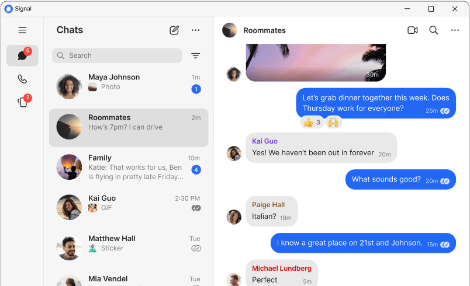

获取 Signal
帮助
博客
开发专区
招贤纳士
捐款
简体中文
Select your language
Afrikaans
العربية
Azərbaycanca
Bahasa Indonesia
Bahasa Melayu
Български
বাংলা
Bosanski
Català
Česky
Dansk
Deutsch
ελληνικά
English
Español
Eesti
Euskera
فارسی
Filipino
Français
Gaeilge
Galego
ગુજરાતી
עִבְרִית
हिन्दी
Hrvatski
Italiano
ქართული
Қазақша
Кыргызча
ಕನ್ನಡ
ខ្មែរ
한국어
Lietuviškai
Latviešu
Magyar
Македонски
മലയാളം
मराठी
မြန်မာ
日本語
Norsk
Nederlands
Polski
Português (Brasil)
Português (Portugal)
ਪੰਜਾਬੀ
Română
Pусский
Slovenčina
Slovenščina
Shqip
Српски
Suomi
Svenska
Kiswahili
தமிழ்
తెలుగు
Українська
اردو
ئۇيغۇرچە
ภาษาไทย
Tiếng Việt
Türkçe
廣東話 (香港)
简体中文
繁體中文
Windows 版 Signal

下载 Windows 版
如需使用电脑版 Signal 应用，您须先在手机上安装 Signal。
不是使用 Windows？
Mac 版 Signal
Linux 版 Signal - 基于 Debian 的发行版